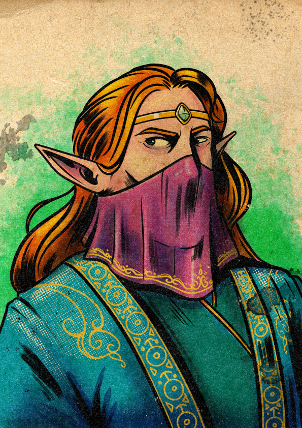

Oleansel is — or has been, or is being currently — a high elf aristocrat. Her people are children of the solar celestials, made to tend libraries and attend to the true elves as heralds; their history describes a better, vanished age of art and beauty. Oleansel's high elf glamor makes her appear and sound slightly different to every creature she meets. What is engaging to one might be different for another. She never, however, appears to be anyone other than herself.
That last clause has a complicated relationship to the rest of her sheet. Her class is Shadow — assassin, spy, commando, an alumna of one of the secret colleges. Her subclass is the Harlequin Mask, the illusionist's college, whose graduates infiltrate enemy strongholds and orchestrate chaos in combat. Her career was Aristocrat, which is to say no career at all — generational wealth, married into or conned into or simply born into. Her complication is a Secret Twin: an identical sibling (or simply someone who looked exactly like her) whose life she stepped into when they went missing. She wears the twin's bracer, which is etched with the dwarven word for transfer.
The Inciting Incident — Charmed Life — established what brought her low: she was defrauding other aristocrats for sport, was found out, lost her position. She turned hero. The bracer was on her wrist before any of that started; the twin was missing before any of that started; the college taught her before any of that started. The court that exposed her did not know any of the half of it.
Agility maxed (the Shadow's core characteristic), with three flat +1s spreading her capability evenly across the other social and perceptive characteristics. The flat 0 in Might fits — she does not fight by overpowering anyone. This is the array of a poisoner, a pickpocket, a knife-and-disappear specialist who is also the kind of person who can hold up an evening conversation as four different people.
| Stat | Value & Source |
|---|---|
| Size | 1M — medium |
| Speed | 7 — 5 high elf base + 2 from Cloak and Dagger kit |
| Stability | 0 |
| Disengage | +1 from kit |
| Melee / Ranged Damage Bonus | +1 / +1 at all tiers, from Cloak and Dagger kit |
| Wealth | 1 (includes Aristocrat career +1) |
| Renown | 1 from Aristocrat career |
| XP / Hero Tokens | 0 / 0 |
The Shadow's heroic resource is Insight: read of the room, read of the target, read of the moment of weakness she is about to exploit. Surges are the universal Draw Steel power-up; Oleansel's class uses them as a converter — surges feed insight as long as she's hitting.
| Trigger | Gain |
|---|---|
| Start of your turn | 1d3 |
| The first time each combat round that you deal damage incorporating 1 or more surges | +1 |
When she uses a heroic ability that has a power roll, that ability costs 1 less insight if she has an edge or double edge on it. If the ability has multiple targets, the cost is reduced even if the edge applies to only one target. Surge spent on a power roll converts to damage and grants the edge discount; the system is built to be played from a position of advantage.
Edge → cheaper ability → more surges accrued → more damage incorporating surges → more insight earned. The Shadow's economy compounds, but only if she's been setting up — flanking, hidden, with an ally adjacent to the target. Almost every selected ability on her sheet either gives her an edge condition or grants a surge.
High elves were made by the solar celestials to tend libraries and serve the true elves as heralds. Their glamor is a magical reading-of-the-observer that makes them slightly different to every audience. Note: high elf glamor does not let her appear as anyone other than herself. Her Harlequin training is what lets her do that. The combination is the character.
A magic glamor makes others perceive her as interesting and engaging, granting an edge on Presence tests using the Flirt or Persuade skills. The glamor makes her appear and sound slightly different to each creature she meets, since what is engaging to one might be different for another. She never appears to be anyone other than herself — this trait is calibration, not disguise.
| Trait | Function |
|---|---|
| Glamor of Terror (2 pts) | Triggered Action · Trigger: She takes damage from a creature. She can use a triggered action to make that creature frightened of her until the end of their next turn. The high elf glamor reverses — the thing the audience finds engaging becomes the thing they cannot bear to look at. |
| High Senses (1 pt) | Her senses are especially keen and perceptive. Edge on tests made to notice threats. |
Shadows are graduates of the secret colleges — alchemy, illusion, shadow-magic. Their training and knowledge places them among the elite ranks of assassins, spies, and commandos. "More potent than any weapon or sorcery is your insight into your enemies' weaknesses."
Oleansel takes her turn after the triggering hero.
Hesitation Is Weakness gives the Shadow turn-order flexibility no other class has: she can chain her turn directly after a teammate's, stacking flanking, setup, and combo damage without an enemy turn between to break the position. The constraint that the prior hero couldn't have used it to start their turn prevents indefinite stacking, but a coordinated cell can pass the chain back and forth.
"Graduates of the College of the Harlequin Mask learn illusion magic, which they use to infiltrate enemy strongholds and create orchestrated chaos in combat."
Oleansel envelops herself in an illusion that makes her appear nonthreatening and harmless to her enemies. She might take on the appearance of a harmless animal of her size, such as a sheep or capybara, or appear as a less heroic and unarmed version of herself.
While this illusion lasts, her strikes gain an edge, and when she takes the Disengage move action, she gains a +1 bonus to the distance she can shift.
The illusion ends when she harms another creature, when she physically interacts with a creature, when she uses this ability again, or when she ends the illusion (no action required). If she ends this illusion by harming another creature, she gains 1 surge.
Spend 1 Insight: Choose a creature whose size is no more than 1 greater than hers and who is within 10 squares. The ability's illusion makes her appear as that creature. The illusion covers her entire body, including clothing and armor, and alters her voice to sound like the creature. She gains an edge on tests made to convince the creature's allies that she is the creature.
Oleansel chooses an enemy within distance of the triggering strike, including the enemy who targeted her. The strike targets that enemy instead.
I'm No Threat plus Clever Trick is the subclass condensed. The first turns her presence into something an enemy doesn't bother to swing at; the second turns an enemy's swing toward a target of her choice — possibly back at themselves, or at one of their allies, or at the illusion-thread she has spun. Combined with the Secret Twin complication, the build's central question is: when she stops being the face that gets targeted, whose face does she become?
Lie — selected at level 1 from the subclass's skill grant.
Throwable light weapons and light armor easily concealed by a cloak. The kit favors short-range strikes, repositioning, and disengaging cleanly.
| Stat | Kit Bonus |
|---|---|
| Armor | Light Armor |
| Weapon | Light Weapon (throwable) |
| Stamina | +3 (folded into her 21 total) |
| Speed | +2 |
| Stability | 0 |
| Disengage | +1 |
| Melee Damage Bonus | +1 / +1 / +1 (tiers 1/2/3) |
| Ranged Damage Bonus | +1 / +1 / +1 (tiers 1/2/3) |
| Ranged Distance | 5 squares |
One signature, one 3-Insight, one 5-Insight. The picks read like the table of contents of a heist novel.
All three are Agility-rolling strikes. You Were Watching The Wrong One is the every-turn pick when she has a flanking partner — free surge for her, free surge for the partner, plus the strike itself. Get In Get Out is a high-damage main action that lets her use her 7 speed before and after the strike, slicing through cover or escaping the moment of attention. Setup is the cell's force-multiplier — if she lands it, the target takes weakness 5 until they save, which means every subsequent ally strike against them deals an extra 5 damage. Setup is named correctly: it is what she does for the team.
Her selected culture is the Professional archetype Criminal Gang — a pre-set Urban / Communal / Lawless bundle. The high elf cultural language (Hyrallic) carries through from her ancestry; her gang's working tongue is Vaslorian.
| Element | Choice & Note |
|---|---|
| Environment | Urban — always centered in a city. (Skill: Sneak.) |
| Organization | Communal — all members of the culture considered equal. (Skill: Jump.) |
| Upbringing | Lawless — folk who performed activities others considered unlawful. (Skill: Hide.) |
| Cultural Language (ancestry) | Hyrallic (high elf) |
| Cultural Language (gang) | Vaslorian (Criminal Gang professional culture) |
The "Criminal Gang" Professional culture is a Draw Steel option that bundles a recognizable subculture as a single culture pick. Oleansel was — in addition to being an aristocrat — a member of a criminal organization. The two facts coexist on her sheet without contradiction. Whether the gang was the cover for the aristocracy, or vice versa, or both for each other, is a question the Inciting Incident leaves open.
"Career? Who needs a career when you're born into money! Or marry into it! Or con your way into it! Whatever the case, you didn't need to work thanks to (someone's) generational wealth."
The perk is enormous in Collateral's setting. The campaign's premise is a debt instrument — a contract — naming her as collateral. Oleansel can pick up that contract, read it for one minute, and memorize it. She can then re-derive the text wherever and whenever she likes. Combined with her Lore: Rumors (career), Lore: Magic-or-other-rotating-lore (perk), and the fact that she's the only character on the cell's sheets with a per-respite rotating skill, she is the team's archivist by some margin.
Caelian (default), Hyrallic (high elf cultural), Vaslorian (Criminal Gang culture pick), Khoursirian (career).
Six Intrigue skills (Disguise, Eavesdrop, Hide, Pick Pocket, Search, Sneak) plus four Interpersonal (Handle Animals, Interrogate, Lie, Perform). Both Brenn and Oleansel run intrigue-heavy stacks; their working specialties are different. Brenn is the breaker-and-entrance specialist (Escape Artist, Sabotage, Track, Sneak). Oleansel is the social-infiltration specialist (Disguise, Lie, Perform, Eavesdrop, Pick Pocket). The cell now has both versions of "I get into places I'm not supposed to be," and they don't overlap.
From the Draw Steel complication: "You have an identical twin — either a sibling or someone who looks so much like you that none would ever know the difference. They had a life that you coveted, or they had obligations that couldn't go unfulfilled. So when they went missing, you stepped in and started living their life. Most folks are none the wiser."
| Aspect | Effect |
|---|---|
| Secret Twin Benefit | She has a 1st-echelon trinket of her choice. This was a signature treasure of her twin, and bears the twin's name or sigil somewhere. (Selected: the Displacing Replacement Bracer — see Section XII.) |
| Secret Twin Drawback | Her twin disappeared because someone wanted them dead. Whenever she finishes a respite, she rolls a d10. On a 1 or 2, the Director can decide that her past catches up with her in the near future in some way — an assassin seeking the twin, someone who knows her real identity and threatens to reveal it, or a similar consequence. |
Every respite — every long rest — has a 20% chance of triggering a complication. Over a long campaign, the consequences accumulate. The drawback is structurally permanent: her twin's enemies are still looking, and the longer she wears the bracer, the more chances they get to find her.
Oleansel transfers an object of size 1S or 1T held in one hand with another object of the same size that is within 10 squares. The objects change locations instantaneously and without creating any auditory or visual disturbance.
If another creature is wearing or holding the object she transfers to her hand, the source notes that (text continues — confirm full conditions at session zero; the recorded text trailed off in extraction).
The bracer's crafting recipe requires petrified wood from a tree that has not been observed since falling, sourced from texts or lore in Zaliac (the dwarven language). Whoever made the original bracer was a dwarven craftworker — and the twin owned it. The ambigram sigil — readable both right-side-up and inverted — is consistent with the bracer's function: an object can leave and arrive looking the same from either side.
The bracer's specific use case is the kind of theft Oleansel was running before she got caught: she puts the dummy object on a noble's mantelpiece, she keeps the real one in her own hand, and at the right moment — silently, invisibly, at a distance of up to 10 squares — they switch. Pickpocketing without ever entering the target's reach. The mechanic is exactly the kind of treasure that would have facilitated her Inciting Incident, and the fact that it was her twin's suggests that the trick was the family business.
From the Draw Steel inciting incident: "Through some treasure or innate ability, you were able to defraud other aristocrats. You did it for fun. When you were found out, you lost your status. Whether you served time or escaped from punishment, you decided to rehabilitate yourself and became a hero."
The Charmed Life text and the Secret Twin complication can be reconciled in multiple ways, and the choice matters:
The Director picks one. The mechanical sheet is consistent with all three.
The Collateral campaign concept identifies Oleansel as having a TBD prequel in the espionage / court-intrigue register. The Inciting Incident and complication confirm the genre. The specifics of which court, whose enemies, what was stolen, and what the twin was doing are Session Zero material.
The premise: the cell wakes in a holding room and is told "The debt has defaulted. You belong to the Saffron Seal now." Oleansel is the cell member who would know what the Saffron Seal is in any precise sense — she has Lore: Rumors, Lore: a rotating second skill via Eidetic Memory, and Renown 1 from a career spent in rooms where such instruments are issued and traded. If anyone in the cell can reconstruct the contract chain that named them all, it's her.
Combat: striker, debuffer, and turn-order manipulator. Fade for repositioning, You Were Watching The Wrong One for flanking surges, Get In Get Out for high-damage break-and-vanish, Setup for the team's force multiplier (target weakness 5, save ends). Hesitation Is Weakness lets her chain her turn after a teammate's. Clever Trick redirects an enemy strike. Glamor of Terror frightens an attacker who hits her. The cell now has two illusionists (Oleansel via Harlequin Mask, Clasiena via Void's A Beyonding of Vision) but they read magic in different registers — Clasiena pierces illusions, Oleansel makes them.
Out of combat: social infiltrator, archivist, and pickpocket. Six Intrigue skills, four Interpersonal. Eidetic Memory rotates a lore skill per respite. The bracer silently swaps small objects across 10 squares. She is the cell's natural lead-investigator for political and contractual material — and the cell's natural face when the situation needs a face.
The Aristocrat career and the lost status imply a specific court she fell from, which is unnamed. The Secret Twin complication implies a faction of the twin's enemies, which is unnamed. The Criminal Gang culture implies a working organization she belonged to, which is unnamed. Three separate faction-shapes are vacant in her backstory — Session Zero fills them, and any or all of them could be candidates for who named her as collateral.
Three threads pull through Oleansel's sheet.
The first is the face question. High elf glamor calibrates her appearance to each observer's preference. Harlequin Mask training lets her appear as another specific creature. Secret Twin means she is already living as another person. The character's basic operating mode is: I am the face the room wants. The campaign arc is whether she can ever be present as someone who is no one else — and whether, after long enough, there is still such a person to be.
The second is rehabilitation in good faith. The Inciting Incident has her decide to become a hero. Whether she is doing this because she has reformed, because being a hero is the most useful cover yet, or because the lost status pushed her to a kind of authenticity she hadn't planned on, is the play question. The mechanical sheet is consistent with all three readings. The campaign's job is to make her commit to one.
The third is the twin still missing. The complication is a structural d10 — every respite, the Director may bring the past forward. The bracer is on Oleansel's wrist, etched with someone else's transfer-word, in a city full of debt instruments and people who collect on debts. The twin is not dead in the complication's text — only missing. Whether the twin is alive, recoverable, and looking for Oleansel in return is the long arc.